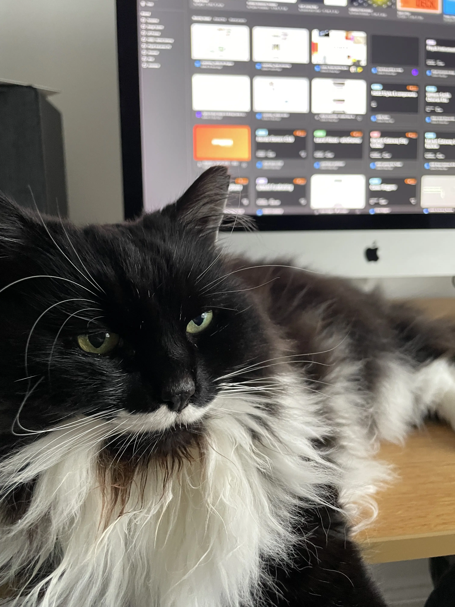
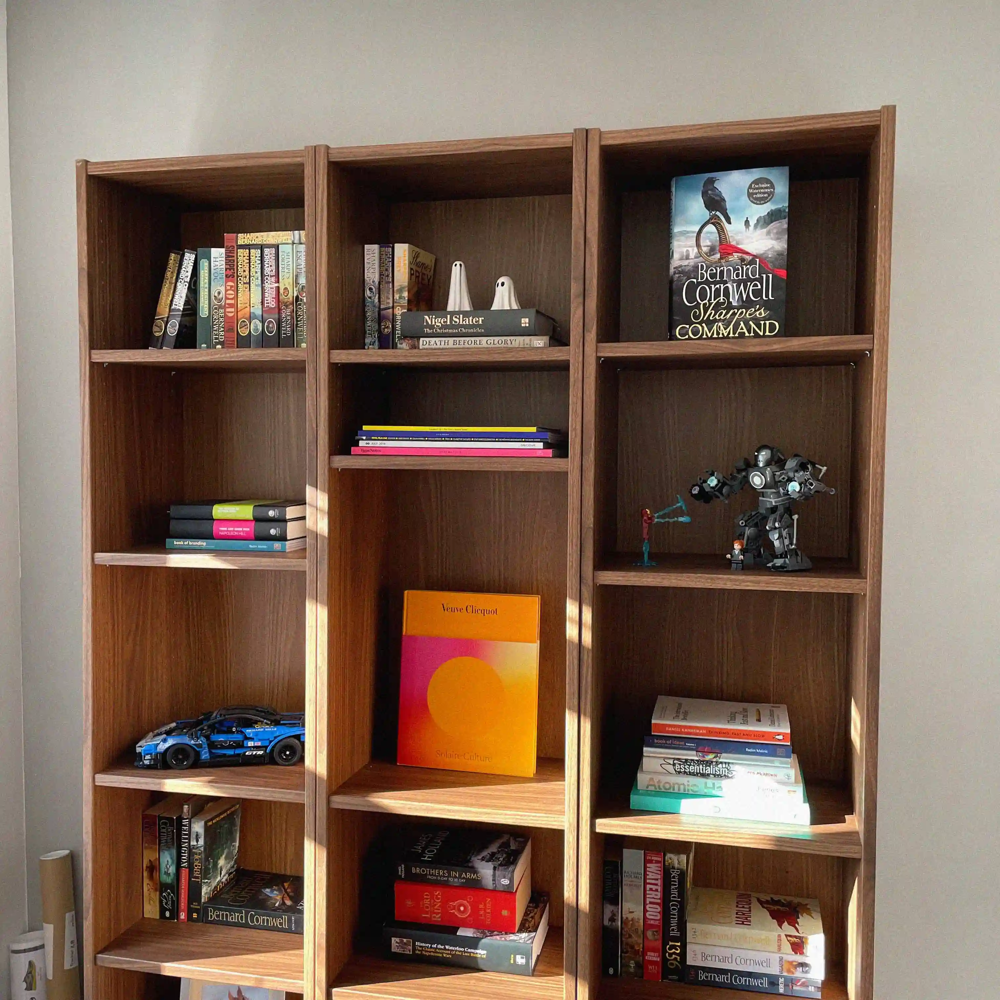
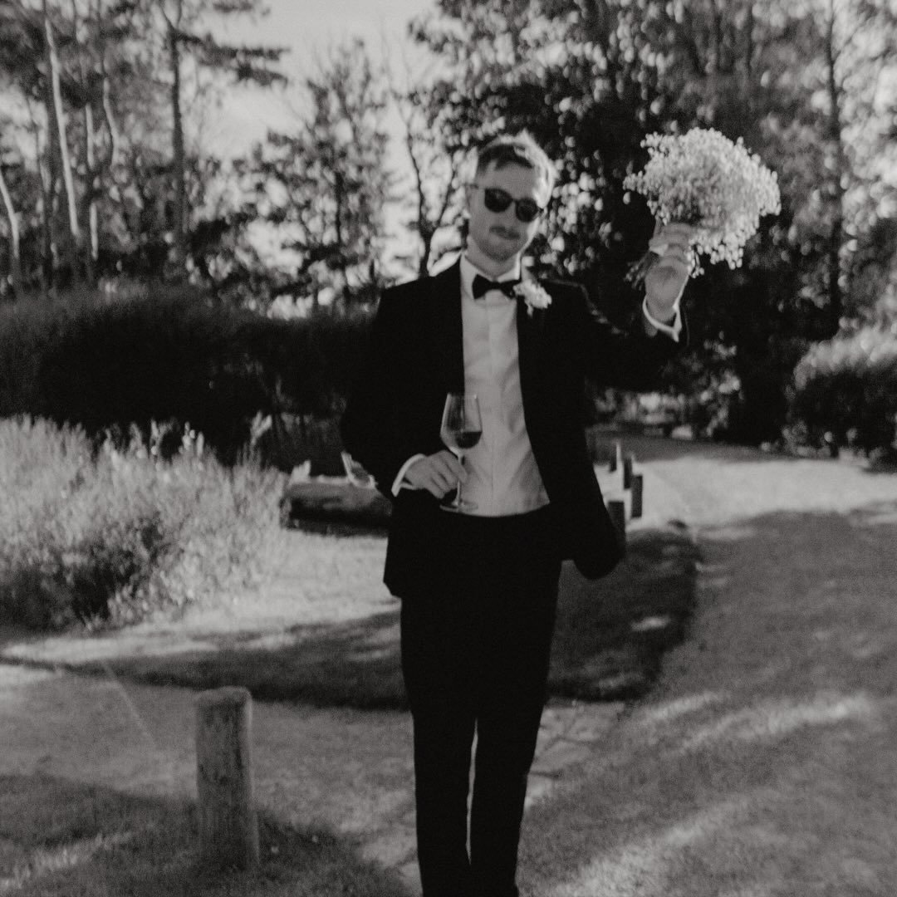

I studied Interactive Media Design at Northumbria University and have spent eight years designing for leading clients and enterprise platforms.
I have directed product experiences for 600,000+ users at Oak Engage1 and 250,000+ customers through Appointedd's SaaS platform2.
I currently head design at Enigma Interactive in Newcastle, working with organisations including National Grid and the North East Combined Authority.
When not designing, I am hiking, watching horse racing or absorbed in Napoleonic War history.
Experience
-
Enigma Interactive Lead User Experience Designer2025 - Present
-
Appointedd Senior Product Designer2024 - 2025
-
Oak Engage Lead Product Designer2020 - 2024
-
Komodo Digital Digital Designer2017 - 2019
Testimonials
"Jack’s ability to think beyond product constraints and lead a team to execute a truly innovative experience is a testament to his skills, vision, curiosity and creativity. If you’re looking for a Senior Product Designer who can drive impactful change, think creatively, and deliver results, I highly recommend Jack!"
Tori Strong (Head of Product at Appointedd)
"Jack is truly one of those people that you meet and immediately know he is doing the job he was destined for. His passion for design and seamless user experiences is infectious, and he is just an all round genuinely great guy to work with and be around. "
Stewart Donaldson (Head of marketing at Appointedd)
Photo dump


